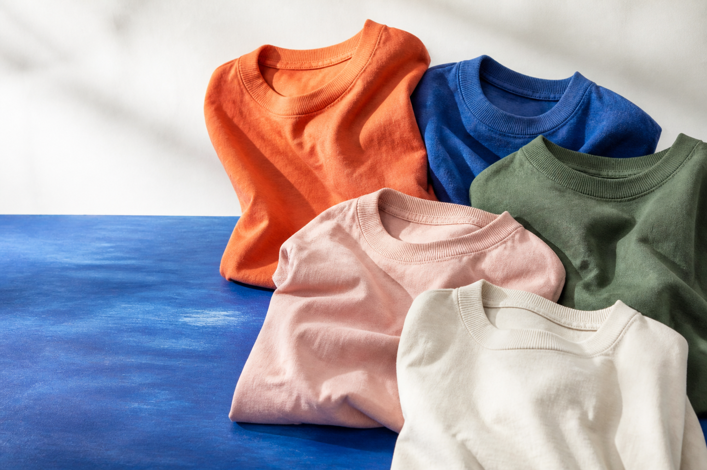

좋은 미국산 코튼
Good on은 엄격한 품질 기준을 통과한 COTTON USA 인증 원료를 중심으로, 매일 피부에 닿는 촉감과 내구성을 함께 살핍니다.
GOOD COLOR, GOOD DAY 7만원 이상 무료배송
ABOUT GOOD ON / SINCE 1997
Good on은 아메리칸 베이식 웨어를 바탕으로, 좋은 원단과 튼튼한 봉제, 깊이 있는 색을 연구해온 데일리 웨어 브랜드입니다.
OUR STORY
OUR BEGINNING
1997년에 시작한 Good on은 ‘궁극의 데일리 웨어’를 목표로 소재, 원단, 패턴, 봉제, 염색, 사이즈를 꾸준히 다듬어 왔습니다. 새 옷의 반듯함보다 입고 빨며 자연스럽게 완성되는 한 장을 생각합니다.
HOW IT IS MADE
Good on은 엄격한 품질 기준을 통과한 COTTON USA 인증 원료를 중심으로, 매일 피부에 닿는 촉감과 내구성을 함께 살핍니다.
완성 후 염색과 세탁에서 생길 수축을 미리 계산해 패턴을 만들고, 반복되는 세탁에도 견딜 수 있도록 단단하게 봉제합니다.
일본의 숙련된 염색 장인이 색 배합부터 염색, 세탁, 건조까지 직접 살피며 옷마다 미세하게 다른 표정을 완성합니다.
PIGMENT DYED IN JAPAN
한 컬러에 100~150장의 옷을 다루는 전 과정에는 약 8시간이 걸립니다. 안료가 원단 표면에 머무는 피그먼트 다잉은 세탁할수록 서서히 옅어지며, 데님처럼 입는 사람만의 색으로 변합니다.
8 HOURS한 컬러의 염색부터 건조까지
100–150한 번에 다루는 제품 수량
100+ COLORS20여 년간 축적한 컬러 변주
WEAR. WASH. REPEAT.
브랜드 정보는 Good On 공식 사이트 를 참고했습니다.